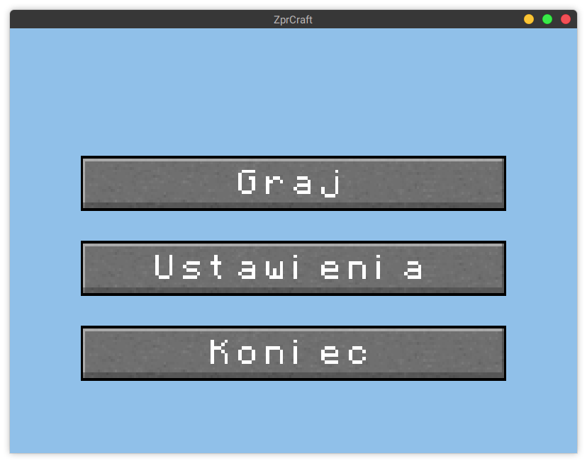
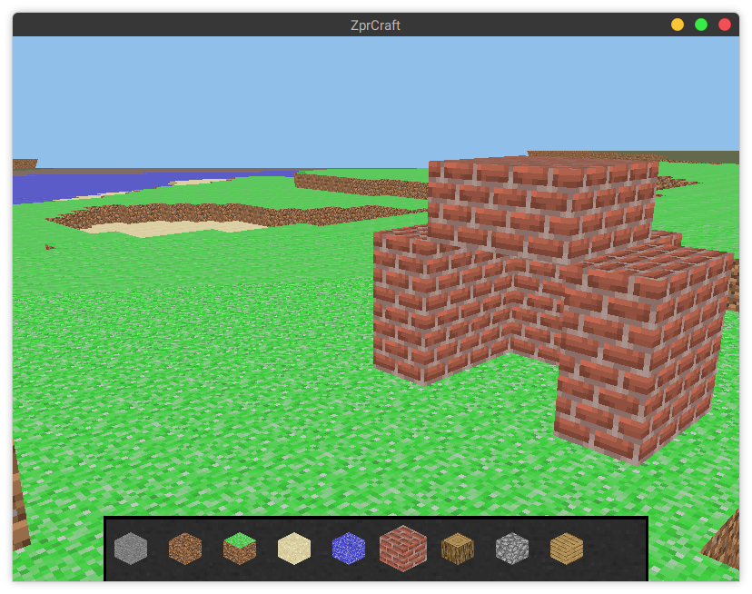

|
ZprCraft
1.0.0
|
Gra jest wynikiem projektu na przedmiot ZPR
 
Gra to taka kopia Minecraft'a. Użytkownik zaczyna na ekranie początkowym z trzema przyciskami
Cały projekt jest napisany w C++.
W dokumentacji wstępnej napisaliśmy, że świat będzie miał 16x16x128. Da się to uzyskać zmieniają map::Chunk::Size w pliku src/map/Chunk.cc gdzieś w okolicach 10 lini. Ale odradzam, gra nie jest na tyle zoptymalizowana, żeby komfortowo grać z tak dużym światem.
Światy zapisane w pliku są dość pokaźnej wielkości, około 10 MB w początkowej formie i szybko rosną. Dlatego po skończonych próbach programu polecam usunąć folder ~/.config/ZprCraft lub zmienić zmienną cfg_dir w pliku src/lib/AppSettings.cc:23 na inną dowolną.
Na początku chcieliśmy zrobić obiektu w rodzaju drzewa obiektów z QT, ale wraz z rozwojem kodu i jego skomplikowania przenieśliśmy się na sprytne wskaźniki.
Użyliśmy typu std::shared_ptr. Dodatkowo zdecydowana większość klas dziedziczy wirtualnie po klasie std::enable_shared_from_this.
W pewnym momencie, mieliśmy problem z funkcją shared_from_this(), okazuje się, że nie można wywołać jej w konstruktorze obiektu. Dlatego ukryliśmy większość konstruktorów i zrobiliśmy funkcje statyczną create, która tworzy za nas obiekt i wywołuje inne instrukcje, które normalnie były by w konstruktorze. Dzięki czemu mamy pewność, że obiekt będzie utworzony wraz ze sprytnym wskaźnikiem i ukrywamy wtedy brzydkie części biblioteki standardowej.
Pod koniec doszliśmy do wniosku, że implementacja sprytnych wskaźników wszędzie była błędem. Program działa nam powolno(ale działa). Bloki, jako proste struktury danych powinny być zrobione jako normalne wskaźniki.
W projekcie znajdują się dodatkowo dwa pliki obcego pochodzenia:
cfgpath.h - plik nagłówkowy znajdujący się pod tym adresem. Autor pozawala na użycie w dowolnym celu. Pozwala na ustalenie folderu z konfiguracją użytkownikajson.hpp - biblioteka to formatu JSON na licencji MIT.stb_image.h - bibliotek do wczytywania plików obrazów. Opublikowana na licencji publicznej.Do kompilacji potrzebne są następujące programy/biblioteki: cmake, boost(tylko testy), OpenGL, GLM, GLEW i glfw3, oraz git do pobrania kod źródłowego. Każda dystrybucja Linuxa zawiera te biblioteki i najczęściej są one już w systemie po instalacji systemu z podstawowymi narzędziami programistycznymi.
Poniżej przedstawiono kilka przykładowe komendy do instalacji na wybranych systemach operacyjnych:
| System | Komenda |
|---|---|
| Ubuntu | # apt-get install git cmake libboost-test-dev libglm-dev libglew-dev libglfw3-dev g++ |
| ArchLinux | # pacman -S git cmake glew glm boost glfw-x11 g++ |
Poniżej przedstawiono skrypt do kompilacji na systemie Linux
Adam Jędrzejowski <adam@jedrzejowski.pl>
Marcin Kretkowski
1.8.17